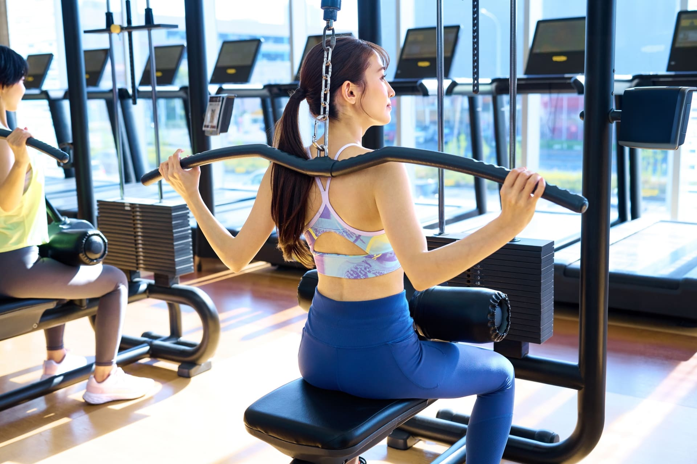

筋トレは「限界まで追い込む」必要がある？追い込み具合と筋肉の成長を、研究で確認してみた

「限界まで追い込まないと意味がない」と思っていませんか？
「もう1回も上がらない、というところまでやらないと効果がない」。トレーニングをしている方から、こう聞くことがよくあります。気合いが入っているときはよいのですが、毎回それをやろうとすると、次に行くのがおっくうになってしまいますよね。
今日は、この「追い込み具合」と筋肉の成長について、研究で確認できた範囲でお話しします。
研究でわかっていること①：限界まで行った場合と、そうでない場合の差は小さい
2023年に『Sports Medicine』誌に掲載されたメタ分析(Refalo et al.)では、健康な成人を対象に、筋肉が大きくなる効果を測った15件の研究をまとめています。限界まで追い込むグループと、限界の手前で止めるグループを比べた研究が含まれています。
報告によると、限界まで追い込んだ場合のほうが、筋肥大(筋肉が大きくなること)で「ごくわずかに有利」という結果でした。ただし、研究グループは、限界まで追い込むほうが筋肥大に優れているという証拠はない、とまとめています。
研究でわかっていること②：筋肉の大きさは、限界に近いほど伸びる傾向。筋力は差が見えにくい
2024年に『Sports Medicine』誌に掲載された別の分析(Robinson et al.)は、55件の研究のデータをまとめ、「あと何回できる余力を残して止めたか」と、筋力・筋肥大との関係を調べています。
報告によると、筋肥大については、限界に近づくほど筋肉が大きくなりやすい傾向がありました。一方、筋力の伸びは、余力の残し方が違っても、同じくらいでした。
つまり、「限界の手前で止めると、筋肉の成長がまったくなくなる」という結果ではありません。ただし、筋肉をできるだけ大きくしたい場合は、限界に近いほうが有利な可能性がある、という整理になりそうです。
注意したいこと
2本の分析は、「追い込んだほうが良い」か「追い込まなくてよい」かで、少し違う読み方ができる内容です。実際、Robinson らの分析は、研究グループ自身が「探索的な分析で、解釈には注意が必要」としています。また、研究の中の「余力」は、各研究のトレーニング方法の説明から推定した値で、実際に測った値ではありません。
なお、今回は2本とも、論文の全文ではなく、要旨や解説記事の確認にとどまっています。具体的な数値や統計の詳細は確認できていないので、この記事では、確認できた範囲の結論だけをお伝えしています。
三日坊主さん専門ジムのおすすめ：「ややキツい」で終えて、また来る
ここからは、研究というより、E.Sで会員様にお伝えしている考え方です。
- 1セットが終わったときのキツさを、1〜10で自分なりに数字にしてみる。目安は5〜7(「普通」から「キツい」くらい)
- 初心者の方は、フォームを崩さずに15回以上できる重さから始める。慣れてくるまでは、フォームを覚えることを優先する
- 「次回もまたやろう」と思えるキツさで終える。限界まで追い込んで、次に行きたくなくなってしまうのは、もったいない
- 慣れてきて、もっと変化を出したくなったときに、少しずつ追い込みを足していけばOK
研究では、限界に近いほど筋肉の大きさが伸びやすい傾向も報告されています。ですが、それは「毎回やり切れる人」の話です。まず続けること、そのうえで少しずつ強度を上げていくこと。この順番が、三日坊主さんには合っていると考えています。
まとめ
限界まで追い込まなくても、筋肉は育ちます。ただし、筋肉をしっかり大きくしたいなら、限界に近いほうが有利な可能性もあります。まずは「ややキツい」で終えて、また来る。慣れてきたら、少しずつ上げていく。それで十分だと思います。
出典・参考文献
- Refalo MC, Helms ER, Trexler ET, Hamilton DL, Fyfe JJ (2023) Influence of resistance training proximity-to-failure on skeletal muscle hypertrophy: a systematic review with meta-analysis. Sports Medicine, 53(3), 649-665. DOI: 10.1007/s40279-022-01784-y(要旨と概要を確認。全文は確認できていません)
- Robinson ZP, et al. (2024) Exploring the dose-response relationship between estimated resistance training proximity to failure, strength gain, and muscle hypertrophy: a series of meta-regressions. Sports Medicine, 54(9). DOI: 10.1007/s40279-024-02069-2(要旨と解説記事を確認。全文は確認できていません。著者の一部は確認できていません)